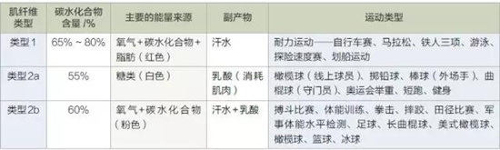

7个运动营养知识点,运动健身的你感觉充实起来
任何你摄入体内的东西都可以看作是营养：食物、液体、药物、维生素、营养剂和空气。理想状态下，你的饮食应当为身体提供充足的营养，维持良好的健康状态以及保持身体活力的能量水平。今天小编就带大家了解一下，运动健身过程中，你必须知道的7个运动营养知识点。
1.营养和运动表现
营养在我们的生活中主要扮演两个角色。首先，它在运动表现和训练表现中所起的作用；其次，更加宽泛的角色就是营养对我们的健康的影响。
在健身方面，饮食可以满足许多不同类型运动员的需求。举个例子，特种兵、游泳健将、铁人三项运动员以及冒险竞技者等有氧耐力型运动员，应当与橄榄球运动员、举重选手、棒球运动员以及短跑选手等无氧耐力型运动员的食物有所区别。
饮食中所蕴含的能量主要有三大来源：碳水化合物、蛋白质和脂肪。
碳水化合物：碳水化合物主要来自用谷物做成的各种食物， 比如面包、蛋糕、甜点、百吉饼、意大利面、燕麦片，另外还有马铃薯或红薯、蔬菜和水果。
蛋白质：肉类是蛋白质的主要来源， 比如鸡肉、蛋类、鱼肉、牛肉、火鸡、羊肉、脏器肉（内脏），另外还有黄豆、豆荚和花椰菜等蔬菜。
脂肪：脂肪的来源有花生酱、橄榄油、橄榄、坚果、种子、蔬菜、坚果油以及多脂鱼（比如沙丁鱼、金枪鱼、三文鱼和鲭鱼）。
维生素、矿物质和电解质对细胞有益，但是不能提供能量。
2.无氧和有氧饮食
通过确定某一特定运动所需的能量，运动员可以制定适合自己的饮食方案。两种主要的运动类型（或者锻炼）―每一种都需要不同的营养水平―分别是无氧运动和有氧运动。
你是一名无氧运动员吗？这意味着你所进行的运动不需要长时间维持极高的心率。无氧运动员包括美式橄榄球前锋、铅球运动员、棒球的外野手、曲棍球或冰球守门员、力量举重、运动员、举重运动员、短跑运动员以及健美运动员。这些运动都要求心率急剧升高，但只需要维持很短的时间。无氧运动员理想的饮食营养构成中碳水化合物含量占比为55%。
有氧运动员所进行的运动需要长时间维持较高的心率。他们是长跑或马拉松运动员、铁人三项运动员、游泳者、竞技类自行车手、越野挑战赛选手、速滑选手以及划船手。他们理想的饮食营养构成中碳水化合物含量占比为65% ~80%。
另外还有混合型运动员，他们的运动既包括有氧运动也包括无氧运动。它们包括搏斗比赛、体能训练、拳击、摔跤、田径比赛、军事体能水平检测、足球、长曲棍球，另外还有美式橄榄球的跑卫、后卫、外接手。他们理想的饮食营养构成中碳水化合物含量为60%。
正如你所看到的，在所有的三种饮食中，碳水化合物都是主要的能量来源，但是百分比有所不同。棒球等少氧运动需要的能量相对较少，因此与跑步等高氧运动相比，饮食中的碳水化合物比重也较少。
3.减脂增肌
在健身群体中最常见的目标就是减脂增肌。那么怀有这样健身目标的人群该如何调整自己的饮食呢？
首先，你需要懂得减肥的两方面背景知识。
第一个原则就是你的身体并不想要消耗脂肪。脂肪是身体最佳的能量来源，并且你身体的首要目标是生存。因此，它会将最好的能量来源储存起来以备不时之需。这意味着你一定要诱使身体消耗脂肪。在这一过程中，你的肌肉也会增加。
第二个原则是你的身体并不会定点减少某个部位的脂肪。做仰卧起坐或臀部伸展运动并不会让这些部位变得苗条。世界上并不存在有提臀功能的运动鞋，也没有让你获得六块腹肌的小腹运动。
4.血糖解决方案
如果你真的想减少体脂，有两个简单的方法可以让你得偿所愿。其中之一就是通过力量训练来控制血糖水平（碳水化合物）。正常的血糖水平是120毫克/分升。当血糖水平达到80毫克/分升时，脂肪就不会在体内堆积。如果你进行力量训练，肌肉体积就会增加，血糖水平就会降至这一水平。
一旦你的血糖水平降至80毫克/分升，你应继续进行有氧训练。运动过程中要确保自己能够正常进行对话―这是确保你达到目标心率，燃烧脂肪的最简单的方式。
另一个诱骗身体燃烧脂肪的简单方法是在早上吃早餐前做有氧运动。不必进行力量训练。你早上刚醒来时，由于整个晚上都没有吃东西的缘故，血糖水平就已经达到了80毫克/分升的水平，因此你可以确定自己一定是在消耗脂肪。同样地，要确保自己心率能够保持在进行正常对话的水平。
5.肌纤维种类
虽然这些燃烧体脂、保存肌肉的窍门――通过开始的力量训练以及之后的有氧运动降低血糖水平，在早餐前进行有氧运动的方法降低血糖水平――极为有效，但是根据特定的健身目标安排恰当的饮食的方法不同于燃烧体脂，增加肌肉。运动营养不仅需要了解第一、第二原则，血糖水平以及靶心率的知识，而且一定要懂得体育运动中所用到的肌纤维类型。
这里的肌纤维分为三类：类型1、类型2a和类型2b。
类型1是有氧型的。这种肌肉纤维呈红色，因为它们要用到大量的含氧血。
类型2a是无氧型的。由于缺少血液的供给，因而呈白色。
类型2b是混合型的。它们呈粉色，与类型1肌纤维相比，它们的血液含量和消耗的氧气都偏少，但比类型2a多。
所有的体育运动都要用到这三种肌肉类型，但是不同的运动都有其主导型肌纤维。
有氧耐力运动主要使用类型1肌纤维，并且需要饮食中的碳水化合物达到65% ～ 80%；无氧运动使用类型2a纤维，要求更低的55%的碳水化合物水平；混合运动使用类型2b纤维，碳水化合物含量应达到60%。
下图表中展示的就是特定运动的肌肉类型以及所要求的碳水化合物的百分比。

在自己的营养计划中可对这些百分比含量进行进一步的实验研究，看看哪一种最适合你。一旦你掌握了自己所需的每一种能量来源，那么你就更有可能始终如一地表现出最佳水平。
6.营养和健康
营养方程式的另一部分就是饮食和营养如何影响健康。饮食不当会引发心脏病、糖尿病和癌症；相反，恰当的饮食或是专门的食物可有效预防这些疾病。在控制另外一种健康风险―肥胖时，营养也起着关键作用。对于那些饱受体重问题困扰的人来说，想要减肥并不是只要吃得少就行，而是要吃得更加健康，以及学会阅读食品标签（例如，许多低脂食物往往糖分含量极高，碳水化合物就是其中一例），只有改变饮食习惯和选择，脂肪才会远离你。
7.坚持学习
显然，营养是确保健康、预防疾病以及将身体功能最大化的最有效的途径之一。如果对于营养学知识你不再只是一名业余爱好者，而是继续深入探索它如何帮助你达成健身目标，那么你将能够更好地了解自己以及你的身体。